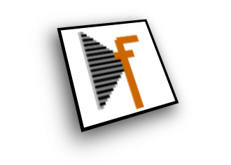

RoboFab Shop
This is a small shop for RoboFab stuff.
RoboFog to UFO Exporter
Export RoboFog sources to UFO format. A set of scripts compatible with RoboFog's Python 1.5.2. which exports the glyphs and background glyphs in a RoboFog source file to XML as .GLIF files. It also exports the font.lib and glyph.lib to UFO compatible lib format. The exporter respects alternate glyphnames created with the AGL Glyphnamer script in RoboFog. Documented and commented sources are included to allow for extensive customisation.
- Format: a set of scripts, including source.
- Required: MacOS 9 or Classic under OSX, Python 1.5.2, RoboFog 1.6.3
- Price USD 250 for single user.
- Ordering: contact Erik